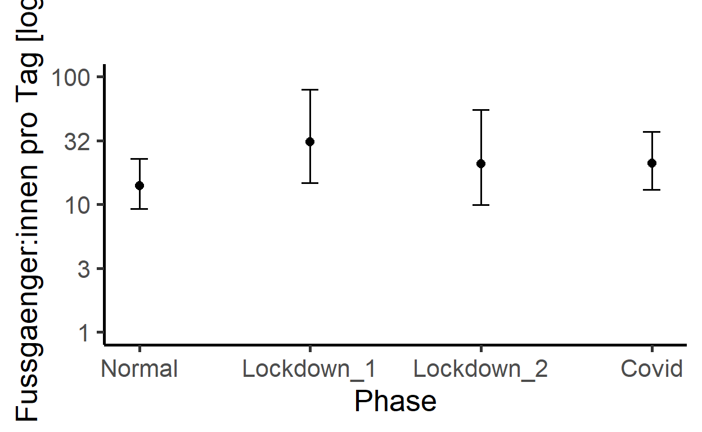

Nachdem die deskriptiven Resultate vorliegen, kann jetzt die Berechnung eines multivariaten Modells angegangen werden. Das Ziel ist es, den Zusammenhang zwischen der gesamten Anzahl Besucher:innen (Total) und verschiedenen erklärenden Variablen (Wetter, Ferien, Phase Covid, Wochentag, KW, Jahr) aufzuzeigen.
Aufgabe 1: Join
Aktuell haben wir noch zwei einzelne Datensätze von Interesse:
einen mit den täglichen Besuchszahlen von Besucher:innen mit den dazugehörigen Datumsinformationen (Datensatz “depo_d” - zu Tagen aggregierte Stunden)
und einen mit den Wetterparametern (“meteo”).
Diese beiden Datensätze muüssen miteinander verbunden werden. Ziel: Ein Datensatz mit den Zähldaten und Datumsinformationen angereichert mit Wetterdaten. Der neue Datensatz soll " umwelt " heissen.
Sind durch das Zusammenführen NA’s entstanden? Falls ja, müssen alle für die weiteren Auswertungen ausgeschlossen werden.
Aufgabe 2: Convinience Variablen, Faktoren, Skalieren
Wir haben bereits verschiedene Convinience Variablen definiert. Nun brauchen wir noch neu die Ferienzeiten als Faktor.
2a)
- Definiert mit if_else() alle Ferienzeiträume in euren df umwelt. WENN Ferien waren, DANN = 1, SONST = 0
Hinweis: etwas ganz ähnliches habt ihr unter Import/Vorverarbeitung bereits für die Covid-Phasen gemacht.
2b)
Macht aus den Ferien einen Faktor.
Auch das Jahr und die KW müssen als Faktor vorliegen.
Nachfolgende Schritte funktionieren nur, wenn umwelt als data.frame vorliegt. Prüft das und ändert das, falls noch kein data.frame.
Unser Modell kann nur mit Ganzzahlen (Integer) umgehen. Daher müssen Kommazahlen in Integer umgewandelt werden. Zum Glück haben wir das schon gemacht und uns bleibt nichts weiter zu tun. =)
2c)
Problem: verschiedene Skalen der Variablen (z.B. Temperatur in Grad Celsius, Niederschlag in Millimeter und Sonnenscheindauer in %)
- Lösung: Skalieren aller Variablen mit Masseinheiten gemäss unterstehendem Code:
umwelt <- umwelt %>%
mutate(tre200jx_scaled = scale(tre200jx)%>%
...Aufgabe 3: Korrelationen und Variablenselektion
3a)
Korrelierende Variablen können das Modellergebnis verfälschen. Daher muss vor der Modelldefinition auf Korrelation zwischen den Messwerten getestet werden. Welches sind die erklärenden Variablen, welches ist die Abhängige?
- Teste mittels folgendem Code auf eine Korrelation zwischen den Messwerten.
cor <- cor(umwelt[,ERSTE SPALTE MIT ERKLAERENDEN MESSWERTEN :
LETZTE SPALTE MIT ERKLAERENDEN MESSWERTEN)])3b)
Korrelationsmatrix erstellen
Mit dem folgenden Code kann eine simple Korrelationsmatrix (mit den Messwerten) aufgebaut werden. Hier kann auch die Schwelle für die Korrelation gesetzt werden (0.7 ist liberal / 0.5 konservativ).
cor[abs(cor) < 0.7] <- 0 #Setzt alle Werte kleiner 0.7 auf 0
Zur Visualisierung kann ein einfacher Plot erstellt werden.
chart.Correlation(umwelt[,ERSTE SPALTE MIT ERKLAERENDEN MESSWERTEN :
LETZTE SPALTE MIT ERKLAERENDEN MESSWERTEN)], histogram=TRUE, pch=19)Wo kann eine kritische Korrelation beobachtet werden? Kann man es verantworten, trotzdem alle drei Wetterparameter in das Modell zu geben?
Falls ja: warum? Falls nein: schliesst den betreffenden Parameter aus. Wenn ihr Parameter ausschliesst: welchen der beiden korrelierenden Parameter behaltet ihr im Modell?
Aufgabe 4 (OPTIONAL): Automatische Variablenselektion
Führe die dredge-Funktion und ein Modelaveraging durch. Der Code dazu ist untenstehend. Was passiert in der Funktion? Macht es Sinn, die Funktion auszuführen?
f <- Total ~ Wochentag + Ferien + Phase +
tre200jx_scaled + rre150j0_scaled + sremaxdv_scaled
# Jetzt kommt der Random-Factor hinzu und es wird eine Formel daraus gemacht
f_dredge <- paste(c(f, "+ (1|KW)", "+ (1|Jahr)"), collapse = " ") %>%
as.formula()
# Das Modell mit dieser Formel ausführen
m <- glmer(f_dredge, data = umwelt, family = poisson, na.action = "na.fail")
# Das Modell in die dredge-Funktion einfügen (siehe auch ?dredge)
all_m <- dredge(m)
# suche das beste Modell
print(all_m)
# Importance values der Variablen
# hier wird die wichtigkeit der Variablen in den verschiedenen Modellen abgelesen
MuMIn::importance(all_m)
# Schliesslich wird ein Modelaverage durchgeführt
# Schwellenwert für das delta-AIC = 2
avgmodel <- model.avg(all_m, rank = "AICc", subset = delta < 500)
summary(avgmodel)
Aufgabe 5: Verteilung der abhaengigen Variabel pruefen
Die Verteilung der abhängigen Variabel bestimmt generell, was für ein Modell geschrieben werden kann. Die Modelle gehen von einer gegebenen Verteilung aus. Wenn diese Annahme verletzt wir, kann es sein, dass das Modellergebnis nicht valide ist.
- Folgender Codeblock zeigt, wie die Daten auf verschiedene Verteilungen passen.
Hinweis: es kann sein, dass nicht jede Verteilung geplottet werden kann, es erscheint eine Fehlermeldung. Das ist nicht weiter schlimm, die betreffende Verteilung kann gelöscht werden. Analog muss das auch im Befehl gofstat passieren.
- Die besten drei (gemäss AIC) sollen zur Visualisierung geplottet werden.
f1<-fitdist(umwelt$Anzahl_Total,"norm") # Normalverteilung
f1_1<-fitdist(umwelt$Anzahl_Total,"lnorm") # log-Normalvert.
f2<-fitdist(umwelt$Anzahl_Total,"pois") # Poisson
f3<-fitdist(umwelt$Anzahl_Total,"nbinom") # negativ binomial
f4<-fitdist(umwelt$Anzahl_Total,"exp") # exponentiell
f5<-fitdist(umwelt$Anzahl_Total,"gamma") # gamma
f6<-fitdist(umwelt$Anzahl_Total,"logis") # logistisch
f7<-fitdist(umwelt$Anzahl_Total,"geom") # geometrisch
f8<-fitdist(umwelt$Anzahl_Total,"weibull") # Weibull
gofstat(list(f1,f1_1,f2,f3,f4,f5,f6,f7,f8),
fitnames = c("Normalverteilung", "log-Normalverteilung", "Poisson",
"negativ binomial","exponentiell","gamma", "logistisch",
"geometrisch","weibull"))
# die 4 besten (gemaess Akaike's Information Criterion) als Plot,
plot.legend <- c("log norm", "weibull", "gamma ", "negativ binomial")
# vergleicht mehrere theoretische Verteilungen mit den empirischen Daten
cdfcomp(list(f1_1, f8, f5, f3), legendtext = plot.legend)
Wie sind unsere Daten also verteilt? Welche Modelle können wir anwenden?
Aufgabe 6: Multivariates Modell berechnen
Ich verwende die Funktion glmer() aus der Bibliothek lme4. glmer ist neuer, schneller und zuverlässiger als vergleichbare Funktionen (diese Bibliothek wird auch in vielen wissenschaftlichen Papern im Feld Biologie / Wildtiermamagement zitiert).
6a)
- Die Totale Besucheranzahl soll durch die Wetterparameter, den Wochentag, die Ferien sowie die Covid-Phasen erklaert werden (Datensatz “umwelt”). Die Saisonalitaet (KW und Jahr) soll hierbei nicht beachtet werden, sie werden als “random factor” bestimmt.
Frage: Warum bestimmen wir KW und Jahr als Random Factor?
Hinweis: Auch wenn wir gerade herausgefunden haben, dass die Verteilung negativ binomial (in meinem Fall) ist, berechne ich für den Vergleich zuerst ein “einfaches Modell” der Familie poisson.
Die Modellformel lautet:
Tages_Model <- glmer(ABHAENGIGE VARIABLE ~ ERKLAERENDE VARIABLE 1 + ERKLAERENDE VARIABLE 2 +
ERKLAERENDE VARIABLE 3 + ERKLAERENDE VARIABLE 4 +
ERKLAERENDE VARIABLE 5 + ERKLAERENDE VARIABLE 6 +
(1|RANDOM FACTOR A)+ (1|RANDOM FACTOR B),
family = poisson, data = DATENSATZ))
summary(Tages_Model) #Zeigt das Resultat des ModellsFrage: Was bedeutet “family = poisson”?
6b) Modelldiagnostik
- Prüft optisch ob euer Modell valide ist.
Hinweis: glmer bringt einige eigene Funktionen mit, mit denen sich testen lässt, ob das Modell valide ist. Untenstehend sind sie aufgeführt (–> analog zu den Funktionen aus der Vorlesung, aber halt für glmer).
# Verteilung der Residuen
plot(Tages_Model, type = c("p", "smooth"))
# Pruefen auf Normalverteilung
qqmath(Tages_Model)
# Overdispersion describes the observation that variation is higher than would be expected.
dispersion_glmer(Tages_Model) #it shouldn't be over 1.4
# zeige die erklaerte Varianz (je hoeher r2m ist, desto besser!)
r.squaredGLMM(Tages_Model)
Sind die Voraussetzungen des Modells erfuellt?
6c) Alternative Modelle
Wir sind auf der Suche nach dem minimalen adäquaten Modell. Das ist ein iterativer Weg. Wir schreiben ein Modell, prüfen ob die Voraussetzungen erfüllt sind und ob die abhängige Variable besser erklärt wird als im vorhergehenden.
Unsere (meine) Daten sind negativ binomial verteilt. Daher sollte wir unbedingt ein solches Modell programmieren. –> Funktion glmer.nb()
Hypothese: “Es gehen weniger Leute in den Wald, wenn es zu heiss ist” –> auf quadratischen Term Temperatur testen (Codeblock unten).
...
tre200jx_scaled + I(tre200jx_scaled^2) +
...
- Könnte es zwischen einzelnen Variablen zu Interaktionen kommen, die plausible sind? (z. B.: Im Winter hat Niederschlag einen negativeren Effekt als im Sommer, wenn es heiss ist) –> Falls ja: testen!
Hinweis: Interaktionen berechnen ist sehr rechenintensiv. Auch die Interpretation der Resultate wird nicht unbedingt einfacher. Wenn ihr auf Interaktionen testet, dann geht “langsam” vor, probiert nicht zu viel auf einmal.
- Wenn ihr verschiedene Modelle gerechnet habt, können diese über den AICc verglichen werden. Folgender Code kann dazu genutzt werden:
# Vergleich der Modellguete mittels AICc
cand.models<-list()
cand.models[[1]] <- Tages_Model
cand.models[[2]] <- Tages_Model_nb
cand.models[[3]] <- Tages_Model_nb_quad
Modnames<-c("Tages_Model","Tages_Model_nb",
"Tages_Model_nb_quad")
aictab(cand.set=cand.models,modnames=Modnames)
#K = Anzahl geschaetzter Parameter (2 Funktionsparameter und die Varianz)
#Delta_AICc <2 = Statistisch gleichwertig
#AICcWt = Akaike weight in %
6d) (OPTIONAL) Transformationen
Bei meinen Daten waren die Modellvoraussetzungen überall mehr oder weniger verletzt. Das ist ein Problem, allerdings auch nicht ein so grosses (man sollte es aber trotzdem ernst nehmen). Mehr dazu unter:
https://besjournals.onlinelibrary.wiley.com/doi/10.1111/2041-210X.13434
Falls die Voraussetzungen stark verletzt werden, wäre eine Transformation angezeigt.
Mehr dazu unter:
https://www.datanovia.com/en/lessons/transform-data-to-normal-distribution-in-r/
- Berechne den skewness coefficient
Welche Transformation kann angewandt werden?
Was spricht gegen eine Transformation (auch im Hinblick zur Visualisierung und Interpretation)? Was spricht dafür?
6c) Exportiere die Modellresultate (des besten Modells)
Modellresultate können mit summary() angezeigt werden. Ich verwende aber lieber die Funktion tab_model()! Die Resultate werden gerundet und praktisch im separaten Fenster angezeigt. Von dort kann man sie via copy + paste ins (z.B.) Word bringen.
tab_model(MODELLNAME, transform = NULL, show.se = TRUE)
# The marginal R squared values are those associated with your fixed effects,
# the conditional ones are those of your fixed effects plus the random effects.
# Usually we will be interested in the marginal effects.
Aufgabe 7: Modellvisualisierung
- Visualisiert die (signifikanten) Ergebnisse eures Modells.
Das Resultat soll sich für kontinuierliche Variablen an untenstehendem Plot orientieren:

Für diskrete Variablen haltet ihr euch bitte an diesen Plot:

Einige Codeblocks, die euch dabei helfen können:
t <- plot_model(NAME_DES_BESTEN_MODELLS, # hier sagen wir, aus welchem Modell geplottet werden soll
# Wir moechten nicht nur die tatsaechlichen Werte geplottet, sondern
# "Vorhersagen" / predictions (fuer jeden Wert auf der x-Achse soll es auch einen
# auf der y-Achse geben)
type = "pred",
# jetzt nennen wir den Term aus dem Modell:
# [all] = Unser Modell enthaellt polynomial oder cubic / quadratic Terme.
# mit [all] tragen wir dem Rechnung und zeichnen "smooth" plots
terms = "tre200jx_scaled [all]",
# und schliesslich setzen wir die Achsentitel
title = "", axis.title = c("Tagesmaximaltemperatur [°C]",
"Fussgaenger:innen pro Tag [log]"))
# Vorbereitungen zum Hinzufuegen der Achsenbeschriftung (Aktuell sehen wir noch die skalierten Werte).
# Nun sollen aber die unskalierten Werte gezeigt werden.
labels <- round(seq(floor(min(umwelt$tre200jx)), ceiling(max(umwelt$tre200jx)),
# length.out = ___ --> Anpassen gemaess der Anzahl zu sehender breaks auf dem Plot
length.out = 5), 0)
# Schliesslich fuegen wir die Achsenbeschriftung hinzu.
(Tempplot <- t +
# fuege die x- Achsenbeschriftung hinzu.
# breaks = c() --> Anpassen gemaess der zu sehender breaks auf dem Plot
scale_x_continuous(breaks = c(-2,-1,0,1,2),
labels = c(labels))+
# fuege die y- Achsenbeschriftung hinzu. Hier transformieren wir die Werte zurueck
scale_y_continuous(breaks = c(0,0.5,1,1.5,2),
labels = round(c(10^0, 10^0.5, 10^1, 10^1.5, 10^2),0),
limits = c(0, 2))+
theme_classic(base_size = 20))
# Exportiere das Resultat
ggsave("temp.png", width=15, height=15, units="cm", dpi=1000,
path = "_fallstudien/_R_analysis/results/")
Hinweis: damit unsere Plots verglichen werden können, sollen sie alle dieselbe Skalierung (limits) auf der y-Achse haben. Das wird erreicht, indem man bei jedem Plot die limits in scale_y_continuous() gleichsetzt.
Abschluss
Nun habt ihr verschiedenste Ergebnisse vorliegen. In einem wissenschaftlichen Bericht sollen aber niemals alle Ergebnisse abgebildet werden –> Eine Faustregel besagt, dass nur signifikante Ergebnisse visualisiert werden. Entscheidet euch also, was ihr in eurem Bericht abbilden wollt und was lediglich besprochen werden soll.